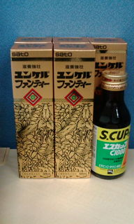
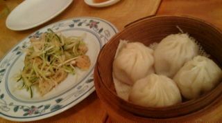
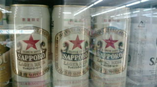

かに風味ブログ
-
応挙とミケ
応挙が今パリに行っているみたい。羽田にあった看板。 フランスのヒトは日本好きだなー。 でもこの虎はかわいいなー。にゃーんって感じ。 このヒトっぽい。 なんか寒くなってふわふわもこもこしたものが恋し…

-
いやされー
おしごとですよー いちどピカチュー撮り始めたらとまらなくなった… 仕事とはまったく関係ないです。 …と仕事とは関係なさそな猫ツーショット でも、お仕事先のキャビネットに入ってるんですー えー ホ…

-
いやされー
東海道線のグリーンにのって（ホリデー事前料金だと東京→小田原750円） ふしぎなお宿に宿泊中。 いつのまにやらぶつけたらしくて、左指が動きません。あー。 ベッドは押し入れっぽくて、小さいとき押し…

-
さいきんの朝ごはん
スープストックトーキョーのオマールエビのスープ。 美味しい。 寒くなるとあったかーいスープを飲むと滋味染み渡る感じがする。 しみじみ。 あー伊勢エビの味噌汁のみたいなー。今は贅沢言わせてくださいー！

-
ハロウィンしごと
こんかいのお仕事はちょっとややこしいのでした。 自分の気持ちが前のめりになったり、弾かれたり。ううう 楽しいけど、こわーい。 初めてのアトラクションに挑むかんじ。何が出るのーどこまで登るのーぎゃー …

-
ぴかぴかー
仕事ですよ！ 打ち合わせと打ち合わせの合間、どっか仕事できないかなーと、某所のルノアールのビジネスルームに入ったら 圏外だったー。 とゆーか、そろそろs30も勇退かなとゆーことで仕事用ノートPC…

-
絵になるねこ
デザイナーさんとこのねこ。 なんとも雰囲気を持ったねこちゃんだけど、ソファーばりばり、机に乗ったり、印刷屋さんにすりすりしたりと、なんともやんちゃ。 でも仕事で伺うたびに癒されちゃうのでした

-
拾った陶片
あれこれかわいいのが多いー。 青磁もあれこれ。 また出光美術館の陶片室行かなきゃ。

-
ちょっと鎌倉いけたのでした
書類ぱたぱた作って仕事たたんで横須賀線に。 なんだか電車が故障。 先頭4両電気がつかないみたい。大船で車両変更。上り電車を急遽下りに変更して対処したみたい。そーゆーこともあるんだー。ちょっとびっくりし…

-
ぶれねこ
近所（いまの仮住まい）のねこ すりすりしすぎて撮れないよー

-
こすもすのきせつ
ちみちみ画像が消えちゃったのを直しております。 状況は相変わらずバタバタしてますーが、突発的にすこーんと隙間ができるので、その隙間にあちこち向かいますー。 明日は…うーん。行けるかなー？どーかなーって…

-
包まないでいいです
自転車買ってかえる。 マンスリーマンションからの通勤用。 よっぽど自分はバス、電車通勤が苦手とゆーことを知った今日このごろ。 これであちこち行ける！ それにしても「よっぽど」って言葉久しぶりに使っ…
-
びみょうなおうち
机のうえに、どーんとユンケル。 しゃちょーありがとう。 昨日からマンスリーマンション暮らし。 住むって物入りだなーと実感。 スープを買ってもお湯を沸かせられない… 洗濯機はあるけど洗剤がない。ワイン…

-
いったりきたり
帰ってます。が、また3連休後は関東にもどりまっす。 今度は1ヶ月半の長期予定。 マンスリーマンションを借りてもらって、とりあえず安心。 なんだかばたばたと慌ただしいけど、楽しいこともあるし。 そんな…
-
給油
ひとりでがぶがぶ飲んですんません。ご馳走さまでしたー。 まだまだ出張延長中。 来月も後半は長期滞在となる予定でいますがどーなのか。 今はあちこち会社近辺のビジネスホテルを彷徨っているのだけど、一番宿…

-
いろいろひさしぶり
休日出勤の会社。 窓から海を見てたらいてもたってもいられなくて、ばたばた仕事を折りたたんで、いつも（？）の浜へ。 もちろん、浜歩き用の靴なんて履いていないからハダシで駆け出すのでした。 ほんのり暖…

-
良い地図
久々に行ったダイソーで良いもの見つけたー。 地図！ 旅行代理店の前にずらーーーっと並んでいるパンフレットと同じくらいの大きさと薄さ。 くるくるっと丸めることもできるから、どこでも持っていけそう！ …

-
コンビニで
缶のサッポロラガー！ 初めてみた！350ｍｌもあった。美味しいですよサッポロラガー。 コンビニの入り口には土嚢が積んであった。。。 いつの間にやらそんな豪雨が？？ なんか変な天気が続いております…

-
いろいろ
出張が伸びたので着る服も限られてきて、急遽ユニクロやらで購入。 ユニクロのピンクって発色が良いのと悪いのがあるんだけどわざとなのかしらー。 この型のこのピンクがほしいのにー！…ってことがあってジタバタ…

-
れんきゅうのわたくし
なんか結局1ヶ月のロングラン出張。 先週末からの三連休は、仕事に動きが無かったので実家にー。 トーキョーは五輪誘致でがんばってる。 またオリンピック来るといーね。 しばらくぶりに東京をあちこち移動す…